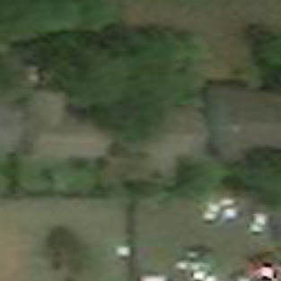
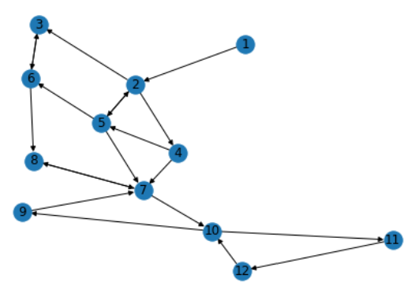
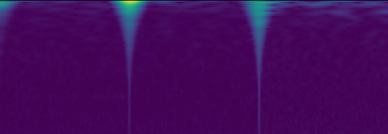
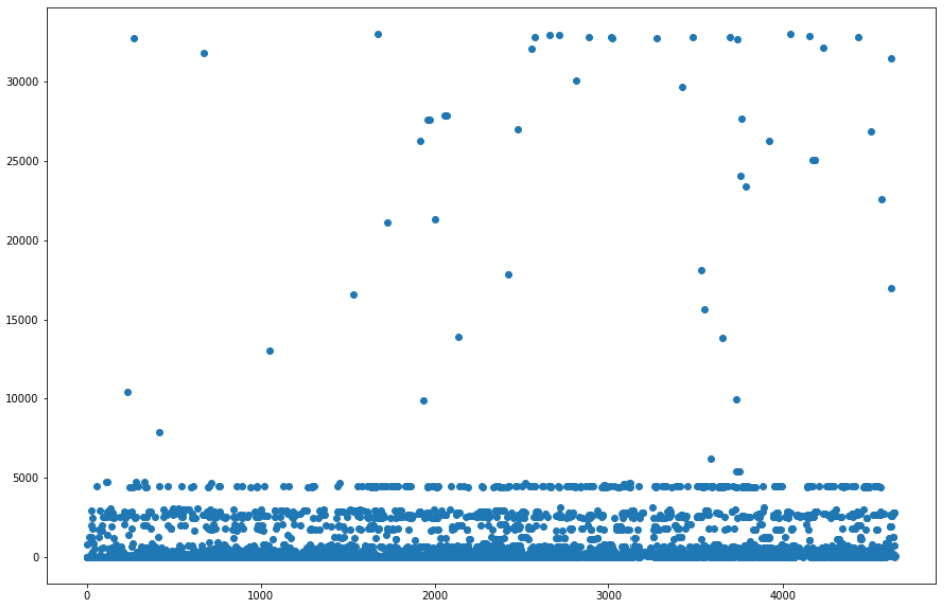
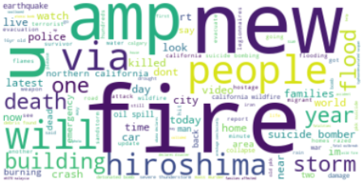
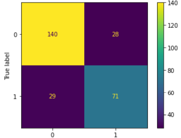
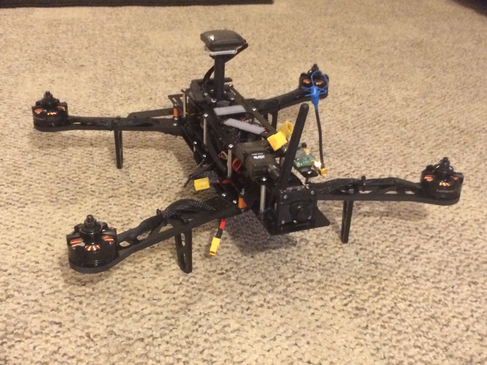

Side Projects

Hurricane Damage Prediction: Trained neural network to recognize hurricane damage in satellite images. This was the capstone project for the IBM Advanced Data Science course series on Coursera.
Stanford Algorithms Specialization Certificate: Coursera series through Stanford on algorithms, covering divide and conquer, graph search, shortest paths, data structures, greedy algorithms, dynamic programming, and NP-complete problems.
Gravitational Wave Detection: Trained neural network to recognize gravitational waves in noisy signals.
Precipitation Prediction: Used linear regression to predict future rainfall from sensor data.
Classifying Disaster Tweets: Used a support vector machine to classify tweets as referring to a real disaster or not.
Titanic Machine Learning: Used a support vector machine and Titanic passenger data to predict which passengers were likely to survive. PC Build: Built PC from scratch including a custom hard-tube water cooling loop.
PC Build: Built PC from scratch including a custom hard-tube water cooling loop.
Quadcopter Build: Built Quadcopter from scratch including soldering all electronic components.